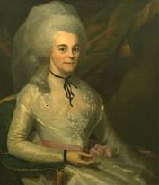

by
Stefan Bielinski
Elizabeth Schuyler was born in August 1757. She was the second daughter in the large family of Albany leader Philip Schuyler, and his wife Catherine Van Rensselaer Schuyler. She grew up mostly at her father's grand new mansion and at their summer home at Old Saratoga.
She was introduced to Alexander Hamilton when he visited her father at Schuyler Mansion in October 1777. Following an ardent courtship, they were married in the front parlor there in December 1780. By 1802, the marriage had produced eight children - although only the first son (Philip Hamilton) would be christened in Albany.
Over the next quarter-century, these Hamiltons lived in Philadelphia and in New York where Hamilton had developed an estate in Harlem called "The Grange." As Hamilton's career developed, he spent less and less time in Albany. However, Elizabeth often brought her family home to Albany in the summer to be with the Schuylers.
Tragedy struck when Hamilton was shot and killed by Aaron Burr in a duel in July 1804. Philip Schuyler died a few months later. Widowed at forty-seven, Elizabeth inherited a substantial part of her father's large estate including land near Schuyler Mansion which then was sold to newcomers and other first-time property owners. Several lots along South Pearl Street were purchased by free blacks and formed the core of the first Afro Albanian community in the South End.
After living many years as a widow in New York, Elizabeth Schuyler Hamilton spent the final years of her life in Washington, DC in the household of her daughter. She died in November 1854 at the age of ninety-seven.
notes
 Sources: The life of Elizabeth Schuyler
Hamilton is CAP biography number 1276. This
sketch is derived chiefly from family
and community-based resources. For more sources,
see her biography online as printed in
American National Biography. See also
a readable yet thorough profile
blog in the History of American Women series.
Sources: The life of Elizabeth Schuyler
Hamilton is CAP biography number 1276. This
sketch is derived chiefly from family
and community-based resources. For more sources,
see her biography online as printed in
American National Biography. See also
a readable yet thorough profile
blog in the History of American Women series.
Copy of one of several distinctive portraits
of her over a long life.  This one by Ralph
Earl - depicting Elizabeth in her wedding dress and done about 1787.
This one by Ralph
Earl - depicting Elizabeth in her wedding dress and done about 1787.
privately posted 4/20/04; last updated 4/10/16